Earthquakes in Oklahoma
Did you know there were more earthquakes in Oklahoma than in California in 2014? That's pretty scary. But the quakes were concentrated in a few key areas. We want to make a map to show who is experiencing the most earthquakes, and will use data joins, reprojection and hex binning to make it happen. Finally, we'll simplify some of our spatial data so it's more ready to use on the big, bad Internet.
The examples shown here are from QGIS 2.6.1 on Ubuntu and have been tested on QGIS 2.14, and should be substantially similar to other operating systems and versions that are close to 2.6.
Open earthquakes shapefile
Click the  button to add a new vector layer.
button to add a new vector layer.
Click "browse" to choose a shapefile.

Our first dataset is a shapefile of earthquake epicenters from the ANSS catalog. You can find the zipped shapefile in the "data" folder of the project. A shapefile is actually several files with the same name and different extensions. Choose ANSS_2014_US_minimal.shp:

Then click "Open." By default you'll see the full extent of the layer, which may look a bit confusing because the Aleutian Islands cross the International Dateline. So use the  zoom button to zoom into the contintental United States (the biggest blob).
zoom button to zoom into the contintental United States (the biggest blob).

We can see what other columns besides the epicenter we have by showing the attribute table. RIght-click on the layer in the Layers panel to select "Open attribute table."

When we open the attribute table, there's not much there beyond the spatial information, just a primary key field and an event_id field.

This is an extreme example (which is entirely contrived on my part) of a common problem: you have spatial data in one table or shapefile, and another attribute you want to visualize spatially in a different file.
Open CSV with more data
In this case, we have data about when the earthquake occurred, magnitude and depth in another CSV. We can join the two datasets because both datasets have a column we can join on: event_id in our shapefile, and catalog_event_id in our CSV file, called ANSS_quake_stats.csv.
Use the  button in the left rail of QGIS to add a delimited text layer.
button in the left rail of QGIS to add a delimited text layer.

Choose the csv file and click "Open" to bring up a screen with more import options:

The only option to change in this case is to select "No geometry (attribute only table)," since there is no spatial information in this csv. Then click OK. Nothing on the map will change, but there will be a new layer in the Layers panel, ANSS_quake_stats.

Join shapefile and CSV
Now we'll create a join. To start, right-click on the shapefile layer (ANSS_2014_US_minimal) --- NOT the CSV layer -- and choose "Properties."

Now click the  join button in the left menu of the popup, then click the
join button in the left menu of the popup, then click the  button to create a new join.
button to create a new join.
Now we'll tell QGIS what we want to join and how. For "Join layer," choose our CSV file. And then tell QGIS which two fields are the same in the tables: catalog_event_id in the csv, and event_id in the original shapefile.

Click "OK" in the popup, then click "OK" again to close the layer properties.
Let's check our work by opening up the attribute table again. If we did the join correctly, you should see data in the newly joined columns, like so:

If you see a bunch of NULL values in the joined columns, it likely means you joined on the wrong fields.
Save joined data as new shapefile
Even though our shapefile and CSV are now joined, we can't do fun stuff like filter by attributes in the joined CSV, like magnitude or date. So we'll save a new copy of the shapefile with the joined attributes. Right-click on the shapefile layer and click "Save as."

There's a few things to make sure we're doing right here. First, click "Browse" to tell QGIS where to save the new file, which you should call ANSS_2014_US_joined.shp so we're all on the same page. For "Format" we want ESRI Shapefile. For CRS (coordinate reference system), we want Layer CRS, and in the box below it should say WGS 84. WGS 84 means that our coordinates are in straight latitude/longitude pairs and are not projected. We'll mess with this more in a minute, but as long as your popup matches this click "OK."

Great! Now we have a single shapefile with all of our earthquake data. Let's filter! Right-click on the ANSS_2014_joined layer and click Filter:

Hey! Where are my hard-won event_date, magnitude and depth columns?!
Zounds! Column shenanigans!
What happened here? If you recall, when we did our data join, the new columns had the csv layer name pre-pended to them. When we saved the joined file as a new shapefile, the column headers got truncated to the first few characters, which are clearly unhelpful.
This isn't really QGIS's fault, but has more to do with the nature of shapefiles. The data component of a shapefile is stored as a DBF file, and DBF column headers can be a maximum of 10 characters long. This made sense long ago when memory was more precious, but it's stupid nowadays. Still, it is reality and we shall endeavor to practice professionalism and forbearance.
Can we fix it? Yes we can!
Installing the Table Manager plugin
It's a little silly that we have to install a plugin to change column names, but we are endeavoring to practice professionalism and forbearance, and installing plugins is easy:
Click Plugins > Manage and Install Plugins.

Search for "table" in the search box, and choose the Table Manager plugin:

Now click "Install plugin."
Fix column names
With the plugin installed, you should see a  button in your left rail. Select the joined-and-saved layer (
button in your left rail. Select the joined-and-saved layer (ANSS_2014_US_joined), and click the button.
We are presented with a list of columns in our layer. Luckily for our sanity, QGIS does preserve the column order from the original join, so you can use the order to extrapolate which column is which. (That said, you should always verify the results if you're using this data in battle.)

Click "Rename" to change each column name, like so:

Click "Save" to confirm the new column headers and re-save the shapefile.
Oh, and just say no to this:
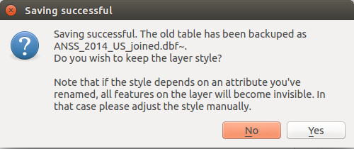Open Oklahoma counties
Now we turn to extracting only the earthquakes that occured in Oklahoma from our larger, national dataset. We'll use a shapefile of Oklahoma counties from the Census Bureau to spatially filter our earthquake data.
Add a new vector layer and select the tl_2014_40_county.shp file.
Hey, where's Oklahoma? Right-click on the county layer, and select "Zoom to Layer."
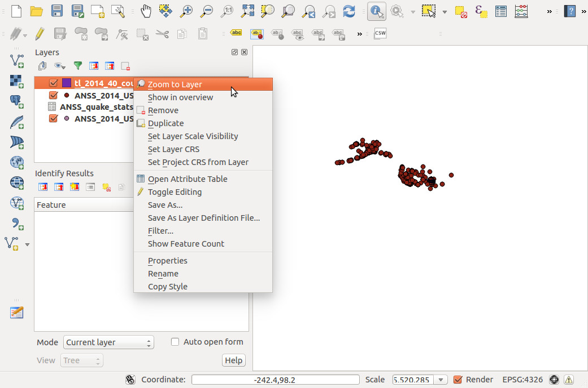Much better:
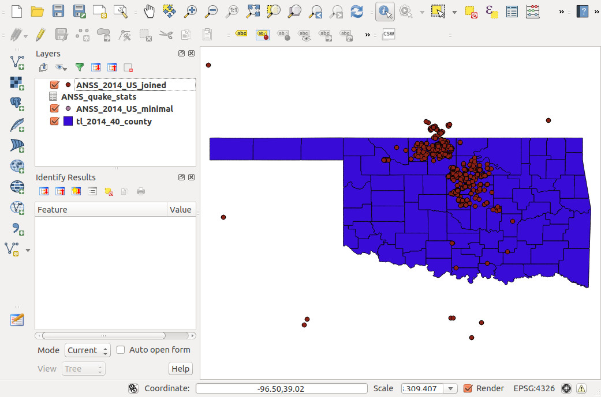Project shapefiles into UTM zone 14N
Even though the earthquakes and counties look like they're overlaying each other properly, the two layers are actually in different spatial reference systems. The earthquakes layer is in WGS 84 (SRID 4326) and the county layer is in NAD 83 (SRID 4269). QGIS (often over-aggressively) is transforming each layer on the fly to show everything together visually, but to actually do spatial operations between the two layers, they must be in the same projection.
So which projection should we choose? That's a whole 'nother class, but short version: We'll use UTM Zone 14N.
Why? First, because both of the source coordinate systems (WGS 84 and NAD 83) are unprojected geographic coordinates. This makes measuring distances and making equilateral shapes (like hex bins) difficult, because the size of a degree of longitude varies depending on the latitude. So we need a coordinate system that uses nice, easy-to-work-with units. Like meters -- everyone loves meters, right? Luckily, we're working with a relatively small area -- one state -- so UTM is a good choice. Within UTM, Zone 14N is the appropriate zone for Oklahoma.
So, now let's create new versions of both layers in UTM Zone 14N. Let's do counties first. Just right-click on the county layer, and click "Save As..."
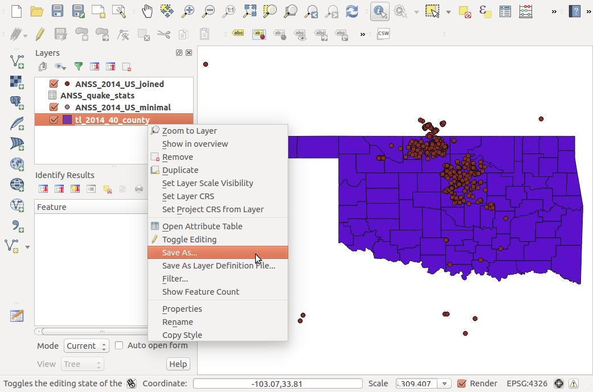Like before, click "Browse" to change the file name, this time to tl_2014_40_county_utm14.shp. Now we'll specify a new projection. If it's not already set that way, change CRS to "Layer CRS" and click "Change" to specify a projection.
QGIS knows hundreds of different projections, so type "utm zone 14" into the Filter window at the top to get matches. You'll see there are several results. We'll choose WGS 84 / UTM zone 14N (EPSG:32614). Then click "OK."
Now you're back on the "Save as ..." popup. Click "OK" to save the projected shapefile.
Repeat this same process for the earthquakes shapefile. Remember, it's important that both new shapefiles are saved in WGS 84 / UTM zone 14N (EPSG:32614).
You should now have two new layers in your QGIS viewer: ANSS_2014_US_joined_utm and tl_2014_40_county_utm14.
Extract Oklahoma earthquakes
Now we'll use our reprojected county shapefile to extract only the earthquakes that are within the state of Oklahoma. We'll do this by finding the intersection between the earthquakes layer and the county layer.
Click "Vector > Geoprocessing tools > Intersect ...":
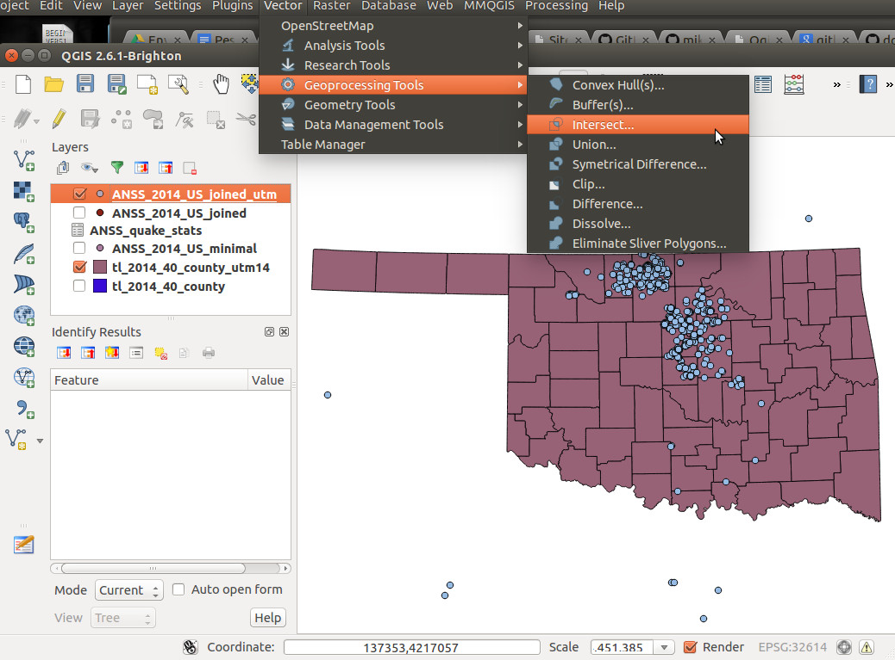In the popup, set the "Input vector layer" to the earthquakes layer, and set the counties layer as the "Intersect layer". We do it this way as opposed to the other way around because we want to end up with the earthquakes that are within the counties, not the counties that touch earthquakes.
Make sure you're using the UTM 14 layers, because the intersection will not work if the two layers are in different projections.
Click "Browse" to choose a file path, and call the new layer ok_quakes_only.shp
Click "OK," then "Close" once the progress bar finishes, and boom! Oklahoma quakes only!
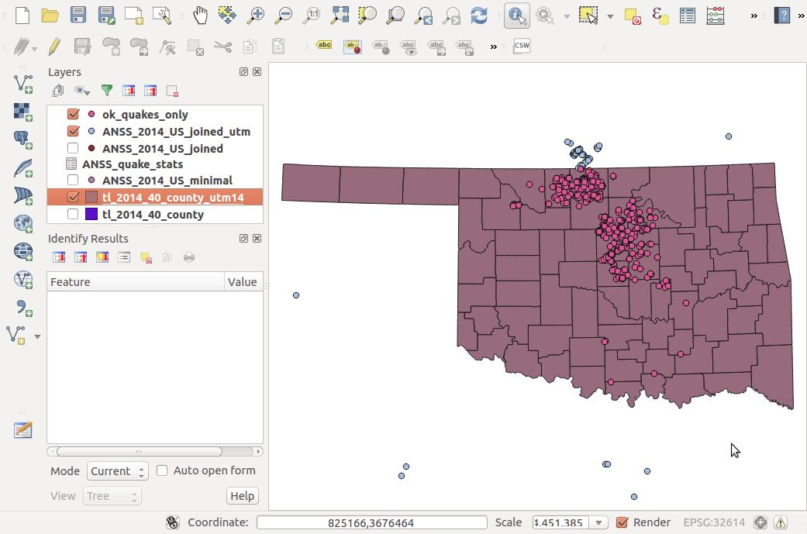Create hexagonal bins
Now we'll create hexagonal bins to show more clearly which areas have the most earthquakes, which is somewhat difficult to tell with only the point data.
Why not just count by county?
We certainly could. In Oklahoma, the counties are relatively similary sized, so this wouldn't be particularly unfair. But some of the counties have an irregular shape, and what if we want to show more detail within a county, or some arbitrary place that doesn't have prexisting geographic boundaries that make sense?
Solution: hex bins. First, we have to create the bins.
We'll use a plugin called MMQGIS to create the bins. In this class, the plugins are already installed on the lab machines, but if you don't already have MMQGIS, follow the directions from above for installing the Table Manager plugin, but search for MMQGIS instead.
While you can manually change it, by default MMQGIS will draw grids based on your current view. So zoom out to where you can see all of Oklahoma, plus a bit more (or a lot more, but it will take a bit longer to make the grids).
Then, click "MMQGIS > Create > Create Grid Lines Layer":
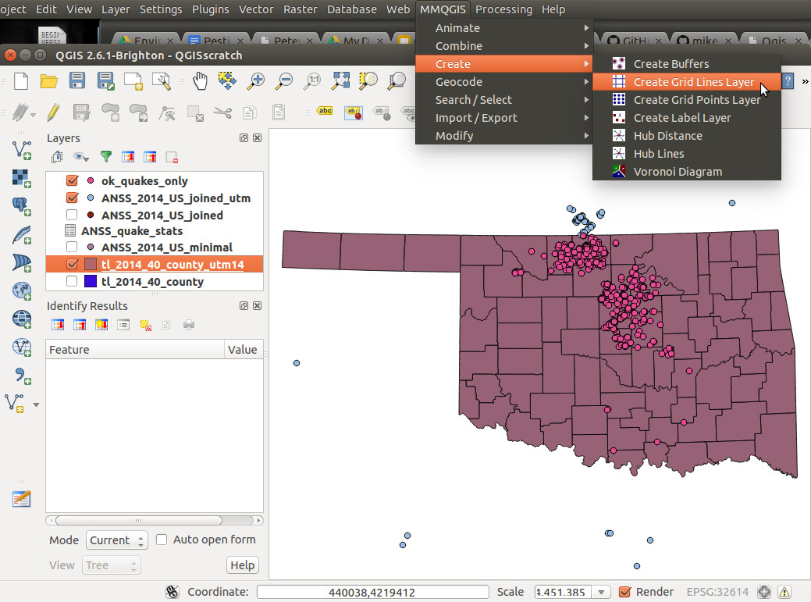Select an output file for your bins, and call it ok_hex_grid.shp. Change the pulldown menu at the bottom of the popup to "hexagon (polygon)":

How big do you want your bins?
Now it gets a little weird. Since the hexagons aren't squares, it's not super-simple to figure out how big to make them based on area or dimensions. The options you can set are "H spacing" and "V spacing." For hexagons, we'll only mess with "V spacing," which is equivalent to the short diagonals of the hexagons.
For the purposes of this exercise, let's say that we want hexagonal grids with an area of 20 square miles. Remember, the unit of our projection is meters, so we'll convert everything to meters. Twenty square miles is 51,799,800 square meters. We can use this calculator to figure out what short diagonal length will yield a hexagon with an area of 51,799,800 square meters. Spoiler alert: it's ~7,734 meters.
So set the "V spacing" to 7734, and click "OK". Another popup will appear, asking you to choose a projection. We want to keep everything in the same projection, so again select WGS 84 / UTM zone 14N (EPSG:32614). Click "OK" again.
Well, that's pretty odd. Drag the grid layer below your others to see the rest of the data.
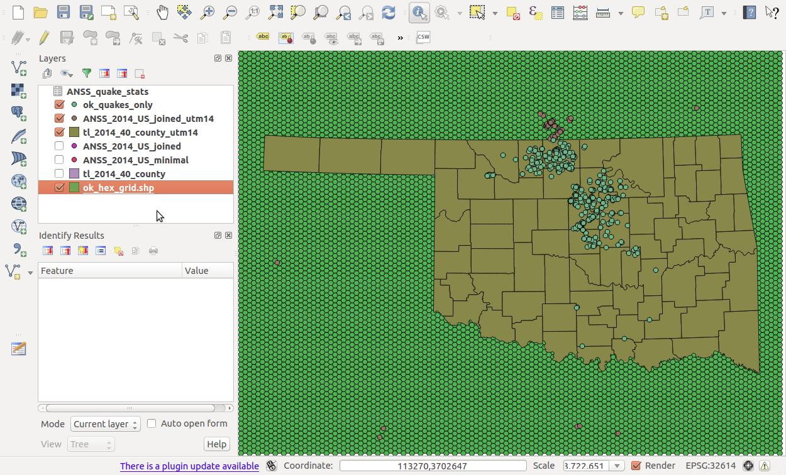That's better.
Count the earthquakes in each bin
Now we'll do a point-in-polygon analysis to count how many quakes are in each of the grids we created. Click "Vector > Analysis > Points in polygon...":
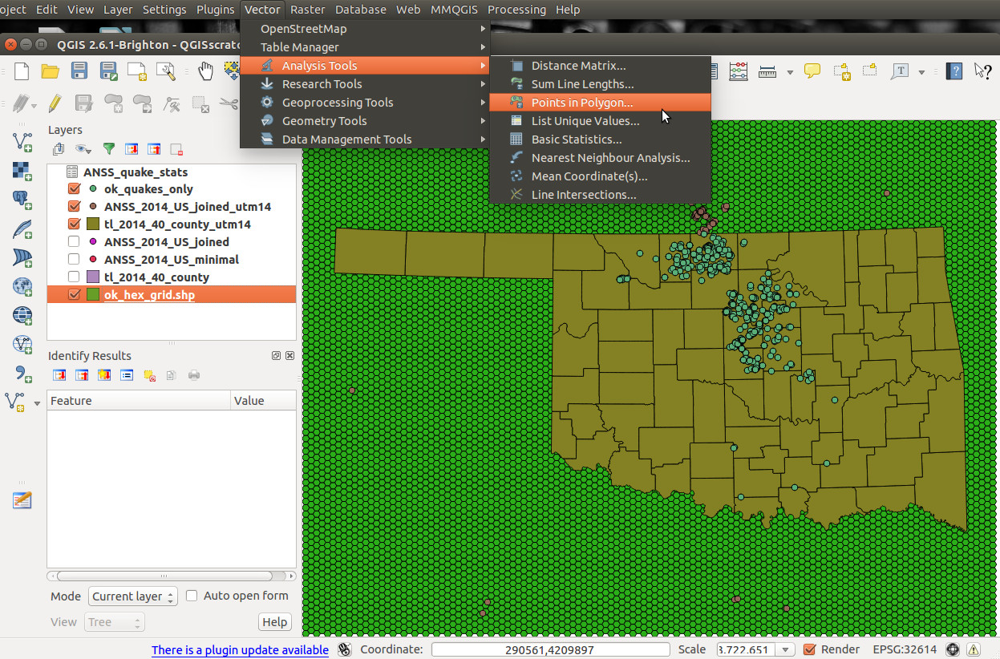Select ok_hex_grid as the input polygon vector layer, and ok_quakes_only for input vector point layer. Then choose a file name for the layer that will be created, ok_quakes_hex_count.shp.
Click "OK", then "Close" when the process is complete. Our new ok_quakes_hex_count layer looks the same as the existing grid layer, but has a new field, PNTCNT, which contains the number of earthquakes in that grid.
Filter out bins with no quakes
Still, most of the grids we created don't actually have any earthquakes. So let's filter to focus on the grids that are actually interesting. Right-click on the ok_quakes_hex_count layer and choose "Filter." Then tell QGIS that we only want grids where PNTCNT is greater than 0:
Click "OK." Now we're getting somewhere:
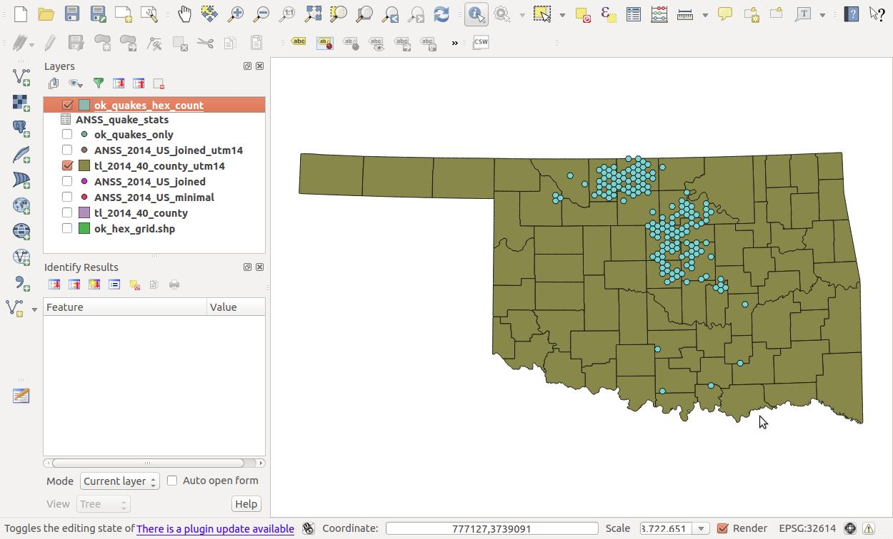Color bins by count
Now let's color-code the hex bins by how many earthquakes each has. Right-click on the ok_quakes_hex_count layer, choose "Properties," and click on the "Style" tab on the left side:
Fill out the fields as shown above, then click "Classify." You'll see that many of the bins only have 1 or 2 quakes, but others have more than 30. Click "OK".
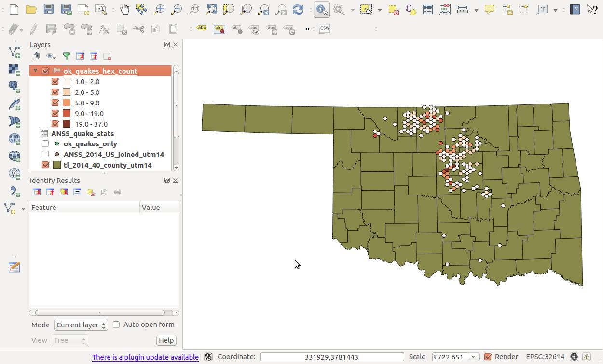Boom. Much more clarity than the bunched-together points we started with.
Simplify county shapefile
Now it's time to take this party outside of QGIS to somewhere like TileMill, Leaflet, GeoDjango, D3, whatever. Those are all pretty legit places to party. But if you're heading to a production website, we're carrying a lot of extra weight. The counties shapefile is somewhere around 5 MB -- no one wants to load that much data on a live website.
So before we export, let's simplify the geometry of the counties layer. There is a lot of extra space being taken up by all the twists and turns of the rivers that make up many of the county borders. As much detail as possible is important for analysis, but unless you're going to show a very zoomed-in view, the difference between the original and simplified versions will be impossible to see.
Click "Vector > Geometry Tools > Simplify Geometries ...":
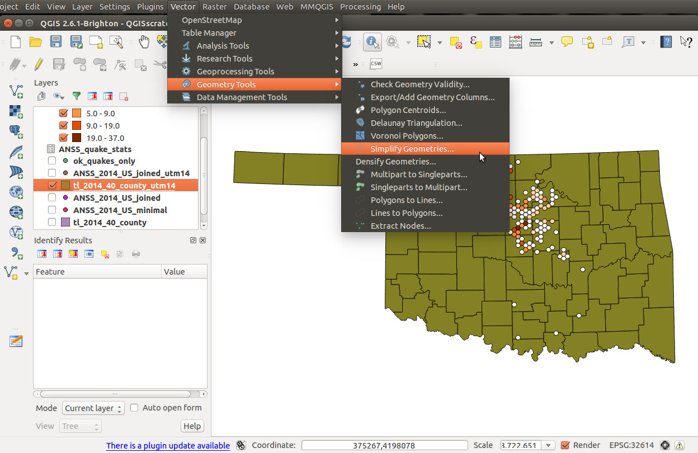Again, to keep things simple we'll stick with UTM 14N at this stage, so we're still dealing with the tl_2014_40_county_utm14 layer. The key value to set here is "Simplify tolerance." The higher you set this number, the less detail will remain after simplification. Tolerance is often a game of guess-and-check, sadly, because it varies with each projection and how complicated the geometries you're dealing with are. In this case, a tolerance of 100 will work well. But for other projections the appropriate value might be 0.0001.
So for now, enter 100 for the tolerance, and specify a file location, with the filename tl_2014_40_county_utm14_simplify_100.shp.
Once we click "OK", you'll get a popup that reports back on the havoc you have wrought. In this case, we reduced the number of vertices by a factor of 30!
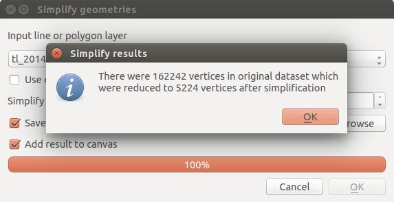But that's fine in this case. You'll have to zoom waaaaay in on the layer to see the difference between the two, and we've reduced our file size to around 100K.
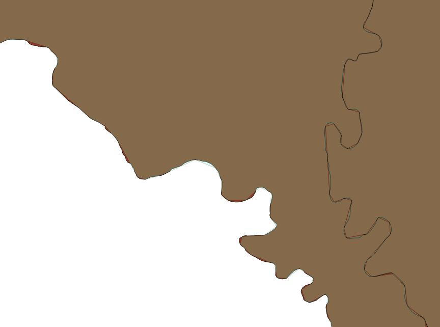Export GeoJSON
Now it's time to export from QGIS. There's many format options, but in this case we'll do GeoJSON because it's so translatable to many other applications.
Right-click on the tl_2014_40_county_utm14_simplify_100 layer and click "Save As." First, change the "Format" to GeoJSON (but look at all those other options!) and pick a filename for your geoJSON.
Next, we'll export into basic WGS 84 latitude/longitude coordinates, because most external libraries expect that, rather than projected coordinates. Click "Change...", then search for "4326" (the SRID of WGS 84) to find the correct coordinate system. Select "WGS 84" and click "OK."
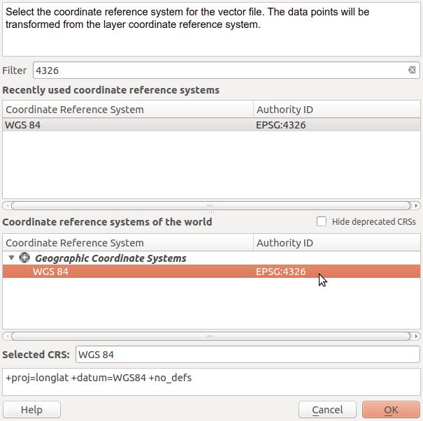And if your popup looks like this, go ahead and click "OK". 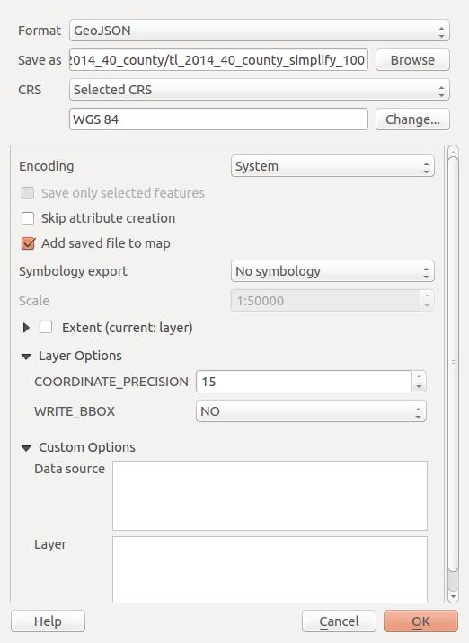
We did it!